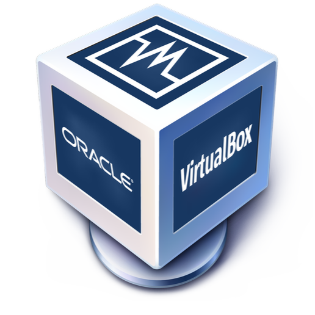

Bonjour, je m'appelle Killian Fievet
Bienvenue sur mon Portfolio
Actuellement en formation,
Je vous propose ce portfolio de retrouver les différentes études,
et projet professionnel que j'ai pu entreprendre au sein de ma carrière.
Vous pouvez consulter mon CV et mes projets ici.

Qu'est-ce que le BTS SIO ? 🎓
Le BTS Services Informatiques aux Organisations (SIO) est un diplôme de niveau Bac+2. Il prépare aux métiers de l'informatique et offre deux spécialisations : SLAM (Solutions Logicielles et Applications Métier) et SISR (Solutions d'Infrastructure, Systèmes et Réseaux).
Spécialité SLAM 💻
Développement d'applications web, mobile et logiciels métiers.
SLAM se concentre sur le développement d'applications performantes et sécurisées.
- Développement Web : HTML, CSS, JS, PHP, React...
- Développement Mobile : React Native, Flutter, Kotlin...
- Gestion de projet : Scrum, GitHub, Trello
- Sécurité : XSS, injections SQL, tests automatisés
Débouchés : développeur web, mobile, ingénieur logiciel, chef de projet.
Spécialité SISR 🛠️
Gestion des réseaux, serveurs, systèmes et sécurité informatique.
SISR forme à la mise en place et à la sécurisation d’infrastructures informatiques.
- Admin Réseaux : Windows, Linux, gestion utilisateurs
- Virtualisation/Cloud : VMware, Docker, AWS
- Sécurité : pare-feu, VPN, détection d’intrusions
- Support : scripts Bash/PowerShell, supervision
Débouchés : admin réseau, technicien systèmes, ingénieur cloud/sécurité.
Toutes ces connaissances ont été acquises de différentes façons :
- • Grâce à mes études en BTS SIO spécialité SLAM
- • Par ma propre initiative, en réalisant des projets personnels et en explorant de nouvelles technologies
- • En relevant des challenges techniques et en effectuant des recherches approfondies
Mes compétences en développement 👨💻
-

HTML - Structure des pages web
-

CSS - Mise en page et design
-

JavaScript - Interactions dynamiques
-

PHP - Développement Back-end
-

MySQL - Gestion de bases de données
-

Python - Automatisation & IA
-

C# - Développement d’applications
-

React native - Développement d’applications mobiles
Mes outils / logiciel ⚙️
-

Environnements de développement modernes
-

Environnements de développement modernes
-

Git - Versioning
-

GitHub - Collaboration
-

Serveur local pour le développement web
-

Oracle VM VirtualBox
-

VMware Workstation